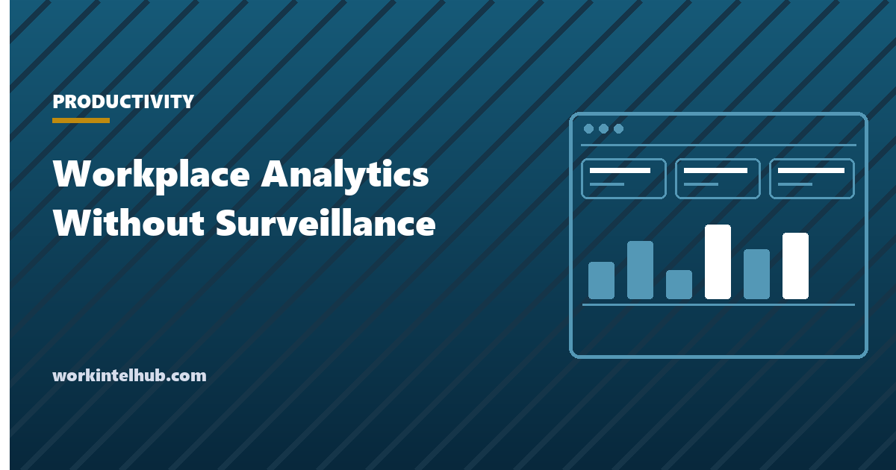
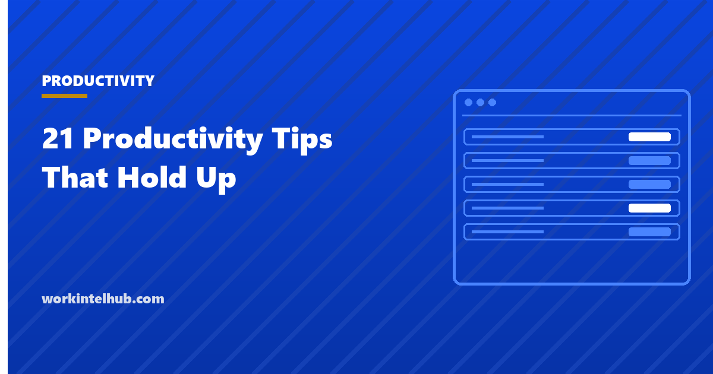
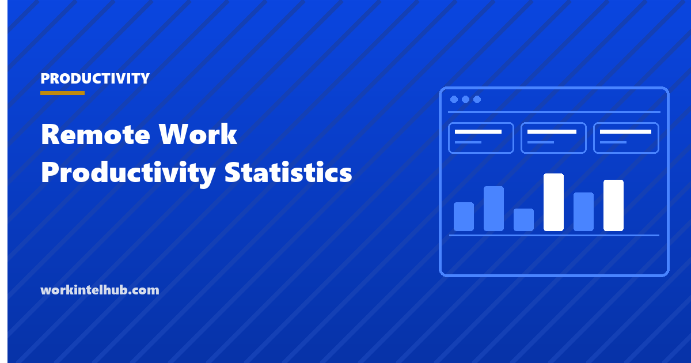
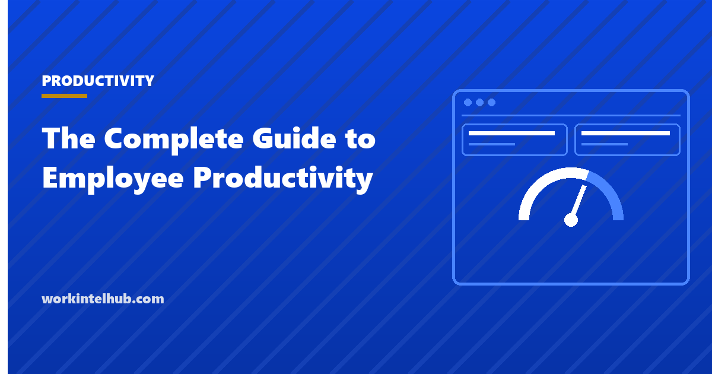
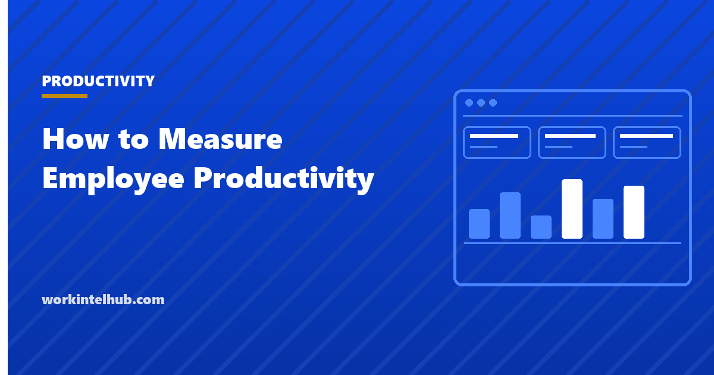
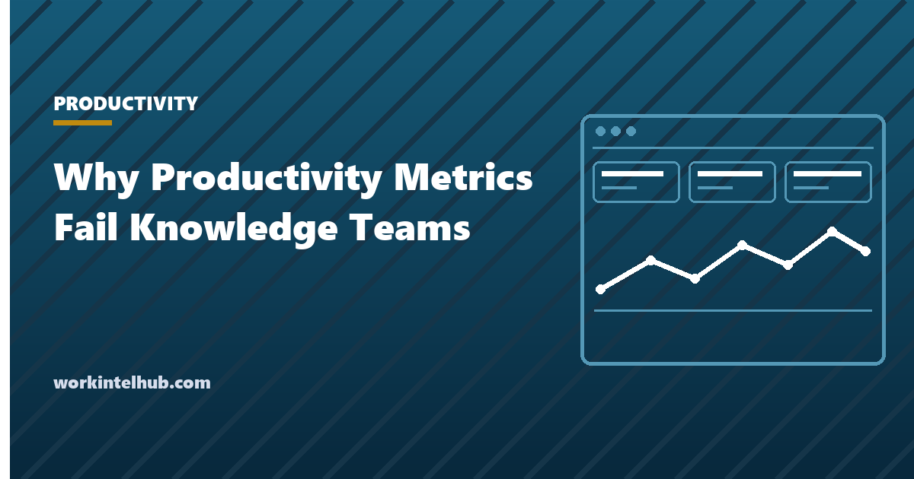
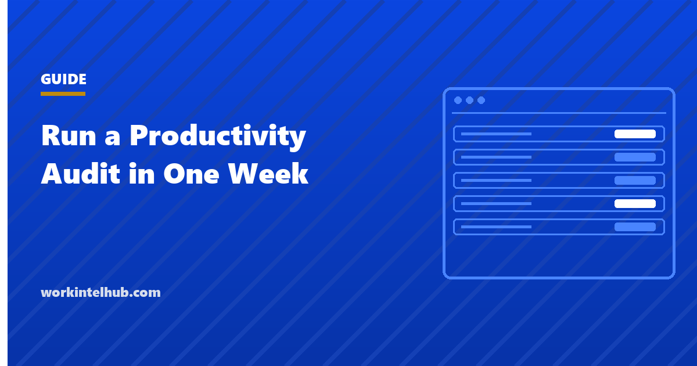

Productivity
Workplace analytics software and employee monitoring run on much the same data. The dividing line is aggregation and purpose. Here is where to draw it, and the design rules that hold it.
August 6, 2026

Productivity
21 productivity tips for work, grouped by the problem they solve, each with the exact situation where it fails. Vendor-neutral, current for 2026, no filler.
August 3, 2026

Productivity
Remote work productivity statistics from primary sources: Pew 2025, a randomized hybrid trial in Nature, Microsoft telemetry and Gallup.
July 30, 2026

Productivity
Employee productivity is a ratio, not a count of hours. A practical 2026 guide to defining, measuring, and improving it without resorting to surveillance.
July 29, 2026

Productivity
How to measure employee productivity on remote and hybrid teams: outcomes, flow, and team health, plus the presence proxies worth dropping today.
July 1, 2026

Productivity
Productivity metrics break once they become targets. Why counts fail knowledge teams, how developer and sales metrics get gamed, and what to use instead.
June 30, 2026

Productivity
Run a productivity audit in one week: one question on Monday, evidence from records you already keep, and two or three agreed changes by Friday.
June 10, 2026
 Productivity
Productivity
How to report team capacity to leadership: separate headcount from capacity, present a tradeoff instead of a complaint, and keep it to one page.
May 6, 2026